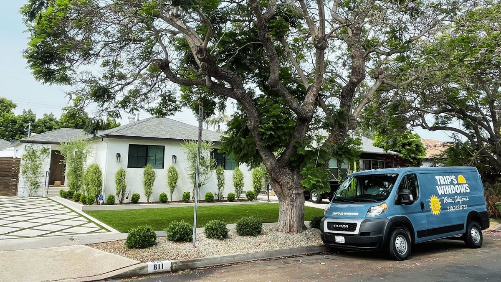

Now Serving the San Fernando Valley

When we started Trip's Windows back in 2020, our world was pretty small — Venice, Santa Monica, and a handful of Westside neighborhoods. Every job was within a few miles of home base, and that's how we liked it.
But as word spread, we started getting calls from further out. First it was Brentwood and Beverly Hills. Then the South Bay. And over the past year, more and more homeowners in the San Fernando Valley started asking if we'd make the drive over the hill.
The answer is now officially yes.
Where we're serving in the Valley
We've added dedicated weekly routes covering seven Valley neighborhoods:
- Encino
- Sherman Oaks
- Studio City
- Toluca Lake
- Tarzana
- Woodland Hills
- Calabasas
These aren't one-off trips — we're running trucks to the Valley every week, which means consistent scheduling, no long wait times, and the same quality you'd get if you lived next door to us in Venice.
Same services, same pricing
Everything we offer on the Westside is available in the Valley: residential window cleaning, commercial window cleaning, residential pressure washing, commercial pressure washing, and gutter cleaning. There are no travel fees, no fuel surcharges, and no distance-based upcharges. The price you'd pay in Santa Monica is the price you pay in Calabasas.
Why the Valley made sense
A lot of Valley homes have the same challenges we see on the Westside — large windows, multi-story layouts, pool decks that collect dust and pollen, and driveways that haven't been pressure washed in years. The climate is actually tougher in some ways: hotter summers mean more dust buildup, and the Santa Ana winds carry debris that cakes onto glass and siding.
We felt like we could bring real value to homeowners out there, and the early response has proven that out.
Book a job in the Valley
If you're in any of the neighborhoods listed above — or nearby — we'd love to hear from you. You can request a free estimate online or call us at (310) 363-0781. We'll get back to you the same day.